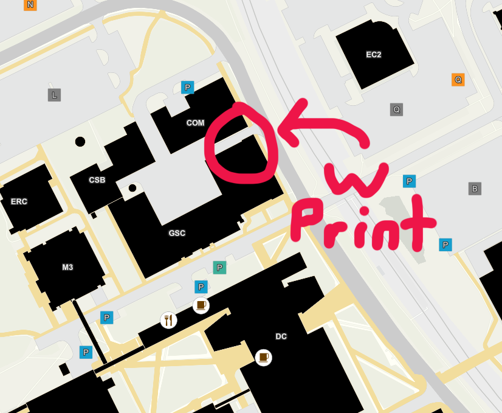
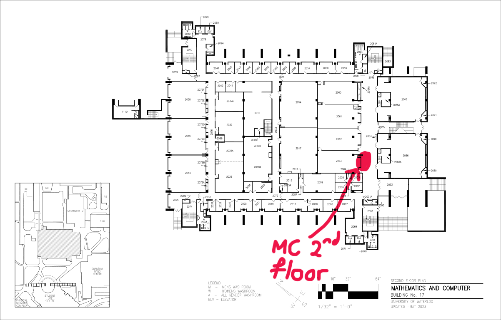
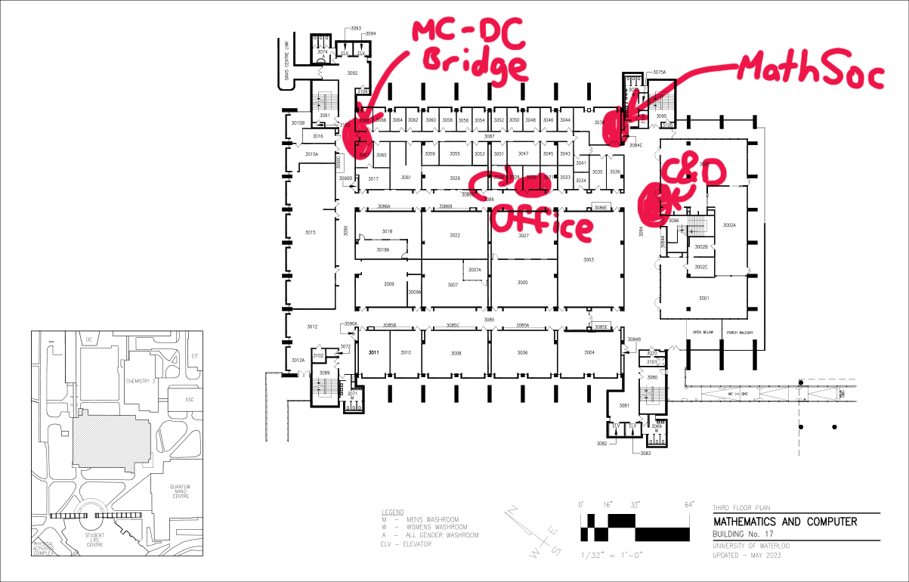
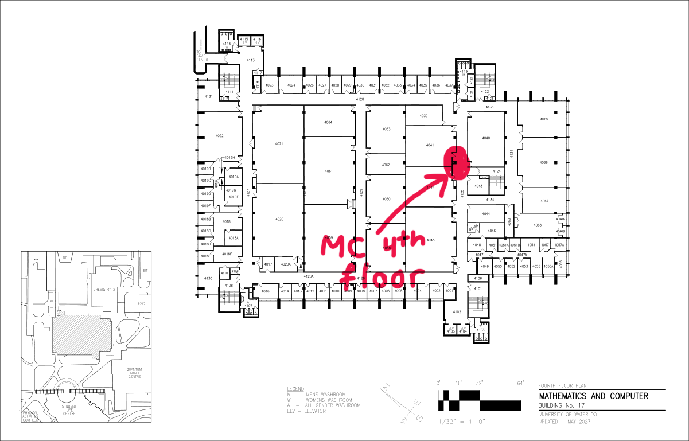
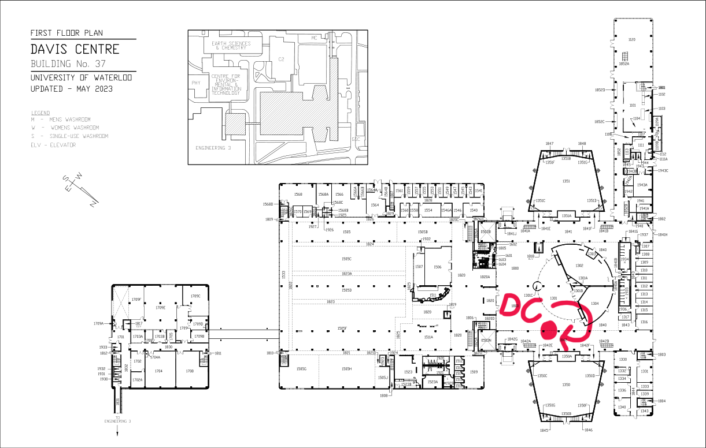
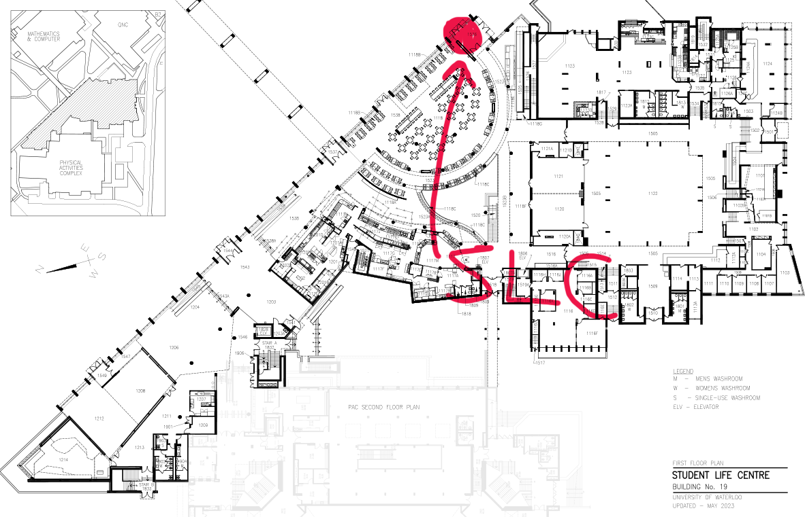

— the student paper of the Math Faculty at Waterloo, containing little math and even less news — is broadly regarded as the Most Important University Publication Ever. You might’ve seen copies littered around campus, lining garbage cans, or whatever else people do with it. Maybe you’ve even read it! As the person reading this, however, the mass dissemination of this long-beloved rag now weighs squarely on your shoulders. But, don’t worry! Soon, you’ll be slinging issues across campus in no time.
Recommended resources: a friend to help! You’ll be carting some heavy stuff around, so bring a friend to hold doors open and help with counting issues. You might break your back otherwise!
Required resources: know your way around campus! At least know where most of the major buildings are, or know how to avail of a map.
Any time before 4:30 PM on Thursday, make your way to W Print in the General Services Complex (GSC) on campus. They don’t make their whereabouts obvious — if you’re crossing Ring Road from the ION tracks, hang a right and then take the left into the weird alleyway. There should be a door with a big W Print logo on it.

Here it is.
Head inside and let them know you’re here for the order. They’ll take a few minutes, but you’ll eventually be given a small hand truck carrying 3–4 boxes of issues.
Make your way to the office with the hand truck. You can take any route you want, but the Editor Certified™ way is to head across William Tutte Way, into DC, up a floor through the elevator, across the MC-DC bridge, down the open hallway shortly ahead and on your left, and into MC 3030.
So, you’ve got all of this week’s issues in the office. What a privilege! All that’s left is to bring it to the stands and be done, right? No! There are some important numbers you need to run and record beforehand, and things to wrap up after.
In the office, log into the main computer (closest to the door). The editor will have told you the password if needed.
Open up Firefox, type “distribution numbers” in the search bar, and click the first Google Sheets link that gets suggested. You should end up in a spreadsheet called, well, “Distribution Numbers”.
If it’s not already open, switch to the tab for the current volume (e.g. v152 in Spring 2023) by clicking the appropriate tab at the bottom of the screen.
Decide how many issues to put on each stand! These numbers should sum to 650 (the total number of issues), and should be recorded in the “Distributed” column. We have 8 stands for .
Check the per-stand numbers for the last issue — if you think you’ve seen some leftover issues on one of the stands, consider reallocating some issues from that stand to a more popular one. If you aren’t sure, just keep the numbers the same.
The recorded amount for “Mail + to keep” should be 30. These issues won’t go on a stand; they’ll be dealt with separately later.
Warning: The “Total” cell will be calculated automatically, so don’t type in it!
Copy these numbers onto a sticky note; you’ll need to bring them with you later.
So, you’ve got all of this week’s issues in the office, and you’ve run the distribution numbers. Is it time to distribute yet? No, certainly not! There’s one last extra-important step, and we want to put off distribution as long as possible so that it comes out on stands late — we want most people to pick it up on Friday morning, after all, rather than Thursday evening!
In any case, some people pay for termly subscriptions to have mailed to them regularly, and this sacred bond is yours to honor. If you need a pair of scissors, a pen, or a marker later on, there should be at least one of each in the Pirouline® tin on the desk.
In the search bar of Firefox, type in “subscriptions” and click the first suggested Google Sheets link. You should end up in a spreadsheet called — you guessed it — “Subscriptions”.
Switch to the internal tab. This has a list of each on-campus subscription. Count how many subscriptions there are and keep that number in your head.
From the bottom-rightmost drawer of the secondary computer (the one you’re not using), take a number of envelopes equal to the number you counted; sit back down at the main computer and set the envelopes down in front of you.
Crack open the topmost box of issues, and take out 30 issues for mail. Set them down next to the envelopes.
For each line in the spreadsheet, slot the indicated number of copies from that pile into an envelope, and write the specified name and department/building/room number on the front of the envelope, in order. Seal each envelope shut and stamp each in the top-left corner with the stamp (this should be sitting on the right half of the desk). Set them all in a pile for later.
Important: the first envelope — “Red Book Mints” — is for our own archives and shouldn’t be sent out. Once sealed, file it away in the drawer labelled “v148–” in the big array of filing cabinets.
Now, switch to the external tab. Again, count how many subscriptions there are and remember that number.
From the cardboard box on top of the big array of filing cabinets, take a number of envelopes equal to the number you counted, sit back down at the main computer, and set the envelopes down in front of you.
Do the same thing as earlier: for each line in the spreadsheet, slot the indicated number of copies from the pile into an envelope, write the full address front-and-center on the envelope, stamp the top-left, and seal it.
Important: the “Legal Deposit” one is really important, so make sure to get the address right! We are required, by law, to send 2 copies of each issue to the National Archives.
Once that’s all done, take all of the sealed envelopes to the MathSoc office (MC 3038) and place them on the big black rack at the front desk to be mailed out.
So, you’ve got all of this week’s issues in the office, you’ve run the distribution numbers, and you’ve finished the subscriptions. Now’s your time to become the great invisible hand that causes to magically materialize across campus (and also causes math students to not pay attention in their morning lectures tomorrow).
This stage is where bringing a friend will help speed things along, so drag someone along with you if you can! Here’s a set of maps with the locations of our stands highlighted:

Stands in MC’s 2nd floor

Stands in MC’s 3rd floor

Stands in MC’s 4th floor

Stands in DC’s 1st floor

Stands in SLC’s 1st floor
Grab the sticky note from earlier, take the hand truck with the issues, and leave the office, closing the door behind you.
Head to each of our stands and set the recorded number of copies on each, taking the hand truck of issues with you.
Since you have the hand truck, you’ll need to take routes with elevators.
Crack open boxes as needed, and if a stand has two levels, use the lower one as overflow when you can’t fit any more on the top level.
When you finish a stand, take the top issue on the stand and slot it into the vertical display tray, if the stand has one. The only stands which don’t have one are DC, MC 4th floor, and MC 2nd floor.
Finally, once all the issues have been distributed, bring the hand truck back to the W Print office where you got it.
Bask in the knowledge that you were squarely responsible for putting the Most Important University Publication Ever on stands today. When you see people reading it between classes tomorrow, that’s your handiwork!